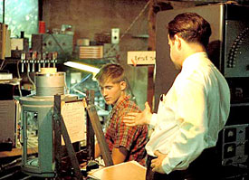
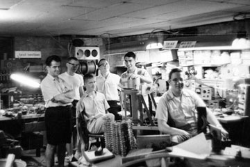

2024-10-16
How I Got Started In Computers

I owe my computing career to the late David M. Boyd,
an instrumentation engineer for Universal Oil Products Company.
In the late 1950s, he opened his suburban basement to a group of high school kids interested in computers.
I joined the group after they had already built an elementary relay computer and moved on to the construction of a real transistorized machine.
Mr. Boyd didn't lecture: he lent me a copy of R. K. Richards,  Arithmetic Operations in Digital Computers,
and suggested that I design and build the memory address register.
The parts for our machine were donated by industry: our prize was a 32K Bryant drum.
Transistors came from Texas Instruments; we had a Flexowriter we were going to use for input/output.
Arithmetic Operations in Digital Computers,
and suggested that I design and build the memory address register.
The parts for our machine were donated by industry: our prize was a 32K Bryant drum.
Transistors came from Texas Instruments; we had a Flexowriter we were going to use for input/output.
It was fascinating. I learned a tremendous amount from the other kids: some were hams and budding EEs, and really understood the read-write amplifiers they built for the drum. I learned to solder, and to assemble a flip-flop on a 3x5 circuit board I had printed myself. Then I learned how to set up a delaying sweep on the oscilloscope and check out the flip-flop I'd built. From the Richards book I learned how to make registers and counters, and how to lay out and minimize boolean logic.
More pictures from Boyd's basement.

Mr. Boyd, Bob Mullen, Dave Lescohier, me, Tom Hughes, Bob Getsla. Click for a larger view.
I wasn't a natural EE: I burned myself soldering, got zapped by power supplies, didn't quite understand why the resistors had the values they did in the circuits. I've often joked that the hardware guys asked me to go into software; that may not be so, but I am sure they were relieved that I took up activities less likely to cause accidents.
I went to MIT in 1961 intending to become a mathematician, and took every computer course the Institute had, and the more I learned, the more I liked it. I got summer jobs operating and programming and part-time programming jobs at school. I learned everything I could about the 7094 from fellow programmers in the Project MAC terminal rooms. And I've been programming ever since.
A 1959 clipping from the local Hinsdale paper. (6K, 2 pictures, 01/29/96)
The story of the time the Russians came to visit the basement. (2K, 6 pictures, 01/28/96)
Copyright (c) 1995 by Tom Van Vleck